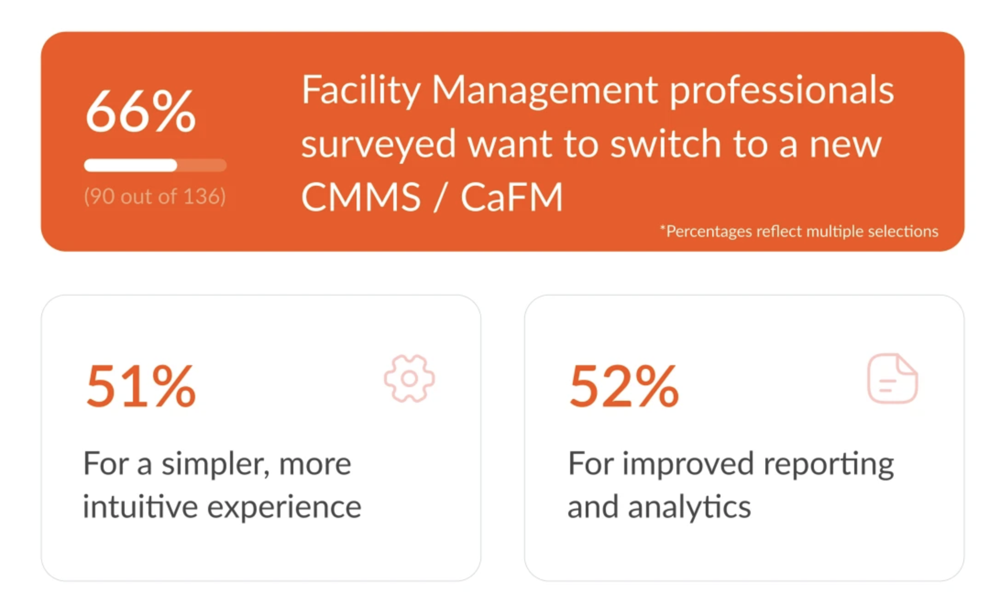
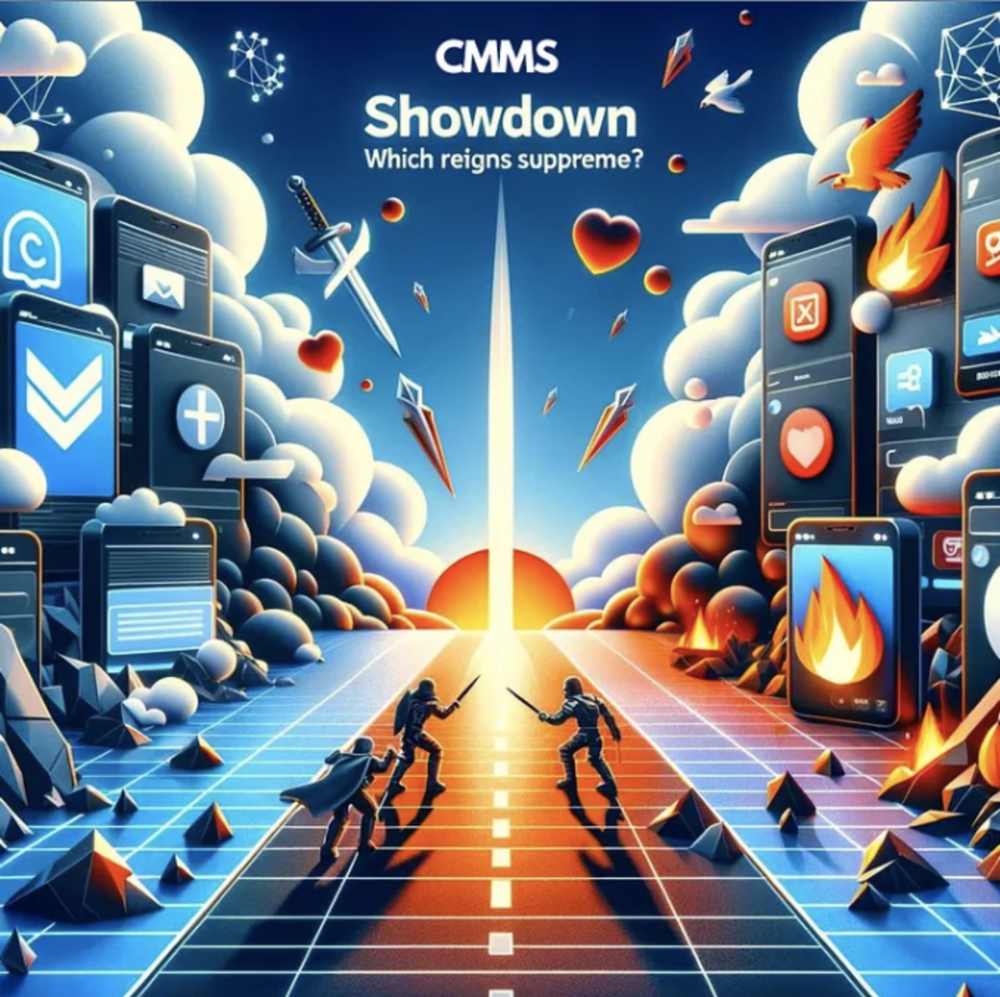

Simplicity in CMMS: A Necessity, Not a Choice
Imagine assembling an IKEA bed frame without a manual. On top of the flimsy wood, you have to figure out where to put the hundreds of tiny dowels based on what you saw in the store and then prepare to panic after you see that there are 25 screws and dowels still in the bag. It's frustrating, right? That's how it feels when a Computerized Maintenance Management Software (CMMS) is too complex. Workers won't use it or they might not use it the right way.
A simple CMMS is like a game with easy controls - everyone wants to play, and everyone knows how to win. It means more people will use it correctly, making sure all the machinery, equipment and high-cost assets are properly maintained and repaired. This leads to fewer breakdowns, less downtime, and ultimately, saves the company money. No seriously, why is simplicity so important?
Let's take hospitality, for example. Imagine a hotel where every repair and maintenance task, from a flickering light in the lobby to an air conditioner that's not cooling in one of the rooms, is addressed quickly and efficiently. This is possible when the maintenance staff can easily log, track, and complete tasks using a straightforward system. Such efficiency not only keeps the hotel running smoothly but also significantly enhances guest satisfaction, as issues are resolved swiftly, ensuring a pleasant stay for all.
Facility managers' needs are no different. They are tasked with maintaining a wide range of assets across multiple locations, making simplicity in CMMS not just a preference but a necessity. An intuitive CMMS can empower teams to manage these locations more efficiently, ensuring that each task, from routine inspections to urgent repairs, is handled promptly. Every second of downtime can equate to significant financial loss, but a simple CMMS turns this challenge into an opportunity for seamless operation and cost savings.
That's why the manufacturing sector thrives on minimizing downtime and maintaining optimal operational efficiency. A simple but efficient CMMS can be a game-changer here by enhancing safety measures and reducing production interruptions. By minimizing disruptions, companies can ensure continuous production flow, reducing waste and increasing output, which directly contributes to the bottom line.
But it's not just manufacturing, facility management and hospitality. A simple to use CMMS is the lifeblood of sectors like Transport & Logistics, Property Management, Food and Beverages, etc. The question then arises: how can these challenges be seamlessly addressed?
Understanding the unique demands of these sectors is the first step towards crafting a solution. Imagine a platform that transforms the complexities of work order management, asset management, preventive maintenance, inspections, and training into a streamlined process. By embracing a mobile-first, password-less approach, such a system could offer effortless access with just a single tap, breaking down barriers to entry and boosting user engagement. The goal is to simplify and elevate the experience for everyone involved, from frontline workers to management teams, making sophisticated tasks feel more approachable and less daunting.
At QByte, simplicity is not just a design principle, it's an art and creed. Learn more at Qbyte.ai.
CMMS Showdown: Progressive Web Apps vs Native Apps — Which Reigns Supreme?
Most Computerized Maintenance Management Systems (CMMS) claim to streamline operations, enhance efficiency, and reduce downtime. However, the reality for users, from seasoned technicians to new recruits, often falls short of this ideal.
For technicians and contractors, downloading and navigating mobile apps can be hard, similar to navigating a maze blindfolded. This challenge sets the stage for an alternative solution that addresses these pain points directly.
Progressive Web Apps (PWAs)
Emerging as this solution, Progressive Web Apps (PWAs) work like mobile apps but without the hassle of having to download or install anything. They offer:
- Fast load times
- Offline capabilities
- Push notifications, ensuring that technicians and frontline workers can access your app even without an internet connection
This stark contrast to the native app experience underscores the core advantages of PWAs in maintenance management.
Challenges with Native Mobile Apps
Many CMMS vendors tout native mobile apps as key features, yet these often add little value due to their complexity and user-unfriendliness. The modern workforce’s mobility and the need for immediate maintenance action highlight the challenges with native mobile apps. These are often:
- Bloated with unhelpful features
- Complicated interfaces
- Users neglecting updates, leading to functionality discrepancies and a degraded user experience
Advantages of PWAs in Mobile Maintenance Management
PWAs provide:
- Ease of Access and Updates: Automatic updates ensure all users have the latest app version without extra steps.
- Reduced Device Storage Requirements: PWAs do not take up valuable storage space, a boon for devices with limited capacity.
- Compatibility Across Devices: PWAs work seamlessly across smartphones, tablets, or laptops, offering a consistent user experience.
Case Studies
- Tinder: Cut load times from 11.91 seconds to 4.6 seconds with their new PWA. The PWA is 90% smaller than Tinder’s native Android App. User engagement is up across the board on PWA.
- Uber: Designed to be fast even on 2G. The core app is only 50k gzipped and takes less than 3 seconds to load on 2G Networks.
- Flipkart: PWA is driving 50% of its new customer acquisition. Nearly 60% of visitors to the PWA had previously uninstalled the native app primarily to save space.
PWAs Are More Secure
Despite misconceptions, PWAs are more secure than native apps, thanks to HTTPS protocols, service workers, and modern web capabilities that enhance security and privacy. This includes:
- Encrypted data transmission
- Secure authentication methods
- Automatic application of security patches
PWAs in Maintenance Management
Progressive Web Apps (PWAs) are changing the game in maintenance management by offering seamless, secure, and efficient management of work orders on the go, without the extra baggage of traditional native apps. The adoption of PWAs is gaining momentum, with tech giants like Microsoft, Apple, and Samsung joining Google in their support, marking a significant shift towards PWAs on devices like iPads and iPhones. This move reflects the growing recognition of PWAs’ value in providing a seamless, secure, and efficient way to manage work orders on the go.
In Conclusion
PWAs do have some limitations, but their simplicity and seamlessness outweigh those limitations. PWAs are reshaping maintenance management, eliminating the need for cumbersome native apps by improving productivity and operational efficiency. The transition towards user-friendly, accessible, and secure CMMS applications shows a pivotal advancement in the industry, highlighting the indispensable role of simplicity and accessibility in achieving success. Learn more at qbyte.ai.
Source: https://www.pwastats.com